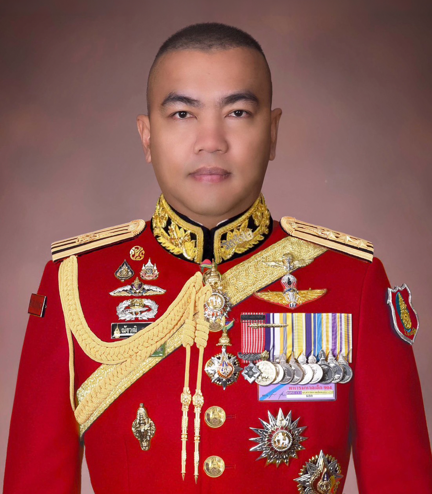

กรมทหารราบ ๙๐๒ รักษาพระองค์ ในพระบาทสมเด็จพระเจ้าอยู่หัว
กรมทหารราบ ๙๐๒ รักษาพระองค์ ในพระบาทสมเด็จพระเจ้าอยู่หัว เป็นหน่วยทหารราบระดับกรมของกองทัพบกไทย ขึ้นตรงต่อกองพลทหารราบที่ ๒ รักษาพระองค์ กองทัพภาคที่ ๑ มีภารกิจหลักในการถวายความปลอดภัยแด่พระบาทสมเด็จพระเจ้าอยู่หัว และพระบรมวงศานุวงศ์ทุกพระองค์ รวมถึงการป้องกันประเทศและการช่วยเหลือประชาชน

ถวายความปลอดภัยแด่พระบาทสมเด็จพระเจ้าอยู่หัว และพระบรมวงศานุวงศ์ทุกพระองค์ รักษาความสงบเรียบร้อยภายในประเทศ ป้องกันประเทศจากการคุกคามทุกรูปแบบ และปฏิบัติภารกิจช่วยเหลือประชาชนที่ประสบภัยพิบัติต่างๆ